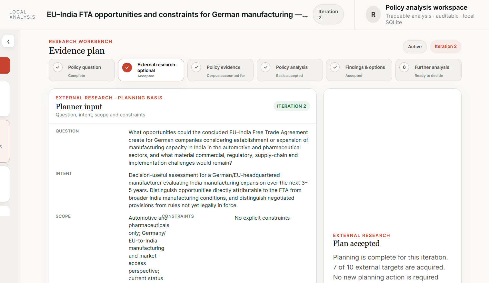
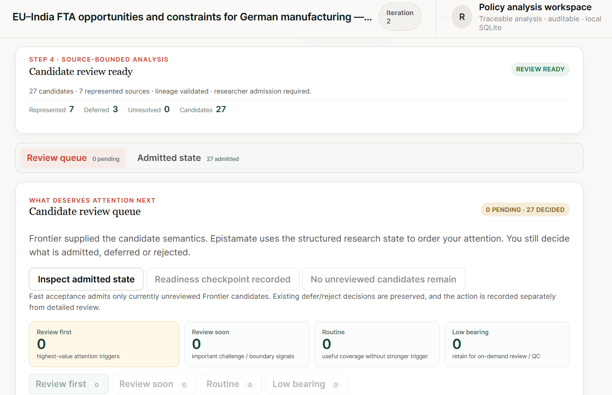
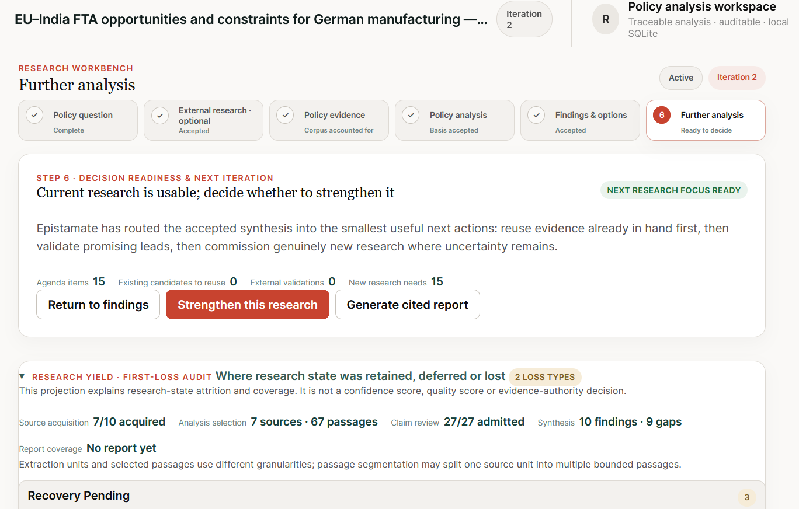
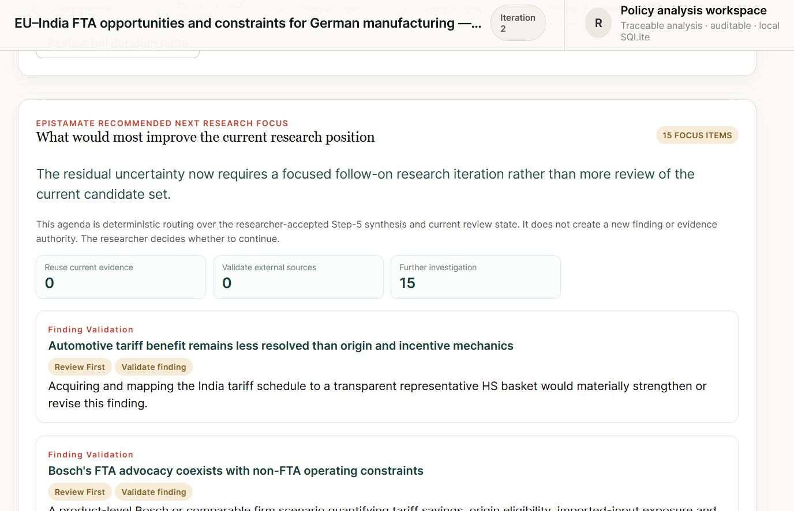

What Epistamate preserved
The manufacturing decision, 3–5 year horizon, automotive/pharmaceutical scope and the requirement to distinguish FTA effects from broader India conditions.
This is one controlled example of the broader Epistamate research workflow. Follow a policy-research run from decision framing through evidence acquisition, source-bounded analysis, optional deeper coverage of already represented evidence, findings and the next research agenda — with the changing research state kept visible rather than only the final brief.
What opportunities could the concluded EU–India Free Trade Agreement create for German/EU manufacturers considering India manufacturing expansion in automotive and pharmaceuticals, and what material commercial, regulatory, supply-chain and implementation challenges would remain?
FTA-attributable effects were kept separate from broader India manufacturing conditions, and negotiated provisions were kept separate from rules not yet legally in force. The researcher retained authority over framing, evidence admission and whether the current state was sufficient to continue.
Controlled product experiment, not a client case study, investment recommendation, policy recommendation or comparative accuracy benchmark. The EU and India concluded FTA negotiations on 27 January 2026; as of this experiment, completion of the parties’ legal procedures still separated the negotiated agreement from entry into force.

The manufacturing decision, 3–5 year horizon, automotive/pharmaceutical scope and the requirement to distinguish FTA effects from broader India conditions.
The framing is not inferred from later findings. The researcher owns the question, intended use and boundaries that subsequent evidence must answer.

The accepted plan carried 10 external targets. At this point 7 had been acquired; the plan itself remained visible as the reference for what the iteration set out to obtain.
Plan acceptance did not imply complete acquisition, sufficient evidence or a finding. Those later transitions remained separate.

Preserved the acquired material and the reviewer’s decision to stop pursuing three targets, instead of converting “work stopped” into “corpus complete.”
Whether those explicit limitations were acceptable for the present iteration, or whether acquisition should resume.

Frontier supplied candidate semantics; Epistamate kept them source-bounded and used structured research state to route attention.
A model-generated candidate did not become admitted evidence merely because it was plausible or well written. Admission remained a researcher action.
67 passages
27 admitted claims
+60 non-overlapping
+16 claims · 43 cumulative
+60 non-overlapping
+18 claims · 61 cumulative
The represented corpus contained 2,168 passages. Epistamate kept the unanalysed remainder explicit and allowed the researcher to request another bounded pass without starting a new research iteration. These counts describe one controlled product experiment, not a completeness or quality score.
The first model-facing packet was deliberately smaller than the represented corpus. Additional non-overlapping passes could be requested over evidence already in hand.
Later passes still produced useful claims, but by Pass 3 more of the value was refinement and deeper support for an increasingly stable research position. A changed analytical basis required fresh synthesis rather than silently retaining the old one.
Logged passage coverage remained a processing fact. It did not mean the remaining passages were irrelevant or that the research was complete.

The interface exposed that this procedural point rested on direct official EU evidence but a single source path, rather than flattening it into a generic confidence number.
“Researcher judgement still required” remained visible. Importing a structured synthesis did not silently turn it into an accepted finding.

The accepted synthesis was converted into 15 further-analysis agenda items rather than disappearing into the final prose.
Whether to generate a cited report from the current state or strengthen the research with another iteration.

A new report can hide how the underlying research position moved. The delta preserves that evolution as research state rather than asking a later reviewer to infer it from two pieces of prose.
Strengthening some findings did not erase open gaps. Persistent and newly discovered uncertainty stayed attached to the iteration.

Prioritized where additional evidence could most improve the current research position, including finding-specific validation needs.
The researcher still decides whether to continue, which validation actions to pursue and whether the expected value of another iteration justifies the work.
The experiment produced a research position that could be inspected, challenged and continued: evidence acquisition limits remained visible, model-proposed claims stayed separate from researcher admission, the researcher could deliberately inspect more of an already represented corpus, and unresolved gaps became explicit next-research work.